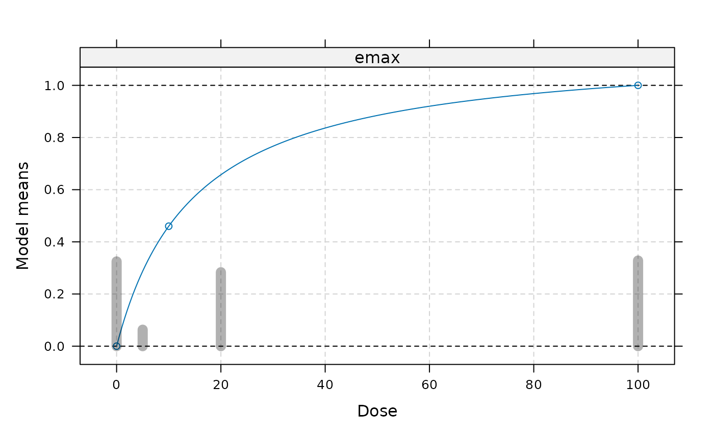

Given a set of models (with full parameter values and model probabilities) the optDesign function calculates the optimal design for estimating the dose-response model parameters (D-optimal) or the design for estimating the target dose (TD-optimal design) (see Dette, Bretz, Pepelyshev and Pinheiro (2008)), or a mixture of these two criteria. The design can be plotted (together with the candidate models) using plot.design. calcCrit calculates the design criterion for a discrete set of design(s). rndDesign provides efficient rounding for the calculated continous design to a finite sample size.
Usage
optDesign(
models,
probs,
doses,
designCrit = c("Dopt", "TD", "Dopt&TD", "userCrit"),
Delta,
standDopt = TRUE,
weights,
nold = rep(0, length(doses)),
n,
control = list(),
optimizer = c("solnp", "Nelder-Mead", "nlminb", "exact"),
lowbnd = rep(0, length(doses)),
uppbnd = rep(1, length(doses)),
userCrit,
...
)
calcCrit(
design,
models,
probs,
doses,
designCrit = c("Dopt", "TD", "Dopt&TD"),
Delta,
standDopt = TRUE,
weights,
nold = rep(0, length(doses)),
n
)
rndDesign(design, n, eps = 1e-04)
# S3 method for class 'DRdesign'
plot(x, models, lwdDes = 10, colDes = rgb(0, 0, 0, 0.3), ...)Arguments
- models
An object of class c(Mods, fullMod), see the
Modsfunction for details. When an TD optimal design should be calculated, the TD needs to exist for all models. If a D-optimal design should be calculated, you need at least as many doses as there are parameters in the specified models.- probs
Vector of model probabilities for the models specified in models, assumed in the same order as specified in models
- doses
Optional argument. If this argument is missing the doses attribute in the c(Mods, fullMod) object specified in models is used.
- designCrit
Determines which type of design to calculate. "TD&Dopt" uses both optimality criteria with equal weight.
- Delta
Target effect needed for calculating "TD" and "TD&Dopt" type designs.
- standDopt
Logical determining, whether the D-optimality criterion (specifically the log-determinant) should be standardized by the number of parameters in the model or not (only of interest if type = "Dopt" or type = "TD&Dopt"). This is of interest, when there is more than one model class in the candidate model set (traditionally standardization this is done in the optimal design literature).
- weights
Vector of weights associated with the response at the doses. Needs to be of the same length as the doses. This can be used to calculate designs for heteroscedastic or for generalized linear model situations.
- nold, n
When calculating an optimal design at an interim analysis, nold specifies the vector of sample sizes already allocated to the different doses, and n gives sample size for the next cohort.
For optimizer = "exact" one always needs to specify the total sample size via n.
- control
List containing control parameters passed down to numerical optimization algorithms (
optim,nlminbor solnp function).For type = "exact" this should be a list with possible entries maxvls1 and maxvls2, determining the maximum number of designs allowed for passing to the criterion function (default maxvls2=1e5) and for creating the initial unrestricted matrix of designs (default maxvls1=1e6). In addition there can be an entry groupSize in case the patients are allocated a minimum group size is required.
- optimizer
Algorithm used for calculating the optimal design. Options "Nelder-Mead" and "nlminb" use the
optimandnlminbfunction and use a trigonometric transformation to turn the constrained optimization problem into an unconstrained one (see Atkinson, Donev and Tobias, 2007, pages 130,131).Option "solnp" uses the solnp function from the Rsolnp package, which implements an optimizer for non-linear optimization under general constraints.
Option "exact" tries all given combinations of n patients to the given dose groups (subject to the bounds specified via lowbnd and uppbnd) and reports the best design. When patients are only allowed to be allocated in groups of a certain groupSize, this can be adjusted via the control argument. n/groupSize and length(doses) should be rather small for this approach to be feasible.
When the number of doses is small (<8) usually "Nelder-Mead" and "nlminb" are best suited ("nlminb" is usually a bit faster but less stable than "Nelder-Mead"). For a larger number of doses "solnp" is the most reliable option (but also slowest) ("Nelder-Mead" and "nlminb" often fail). When the sample size is small "exact" provides the optimal solution rather quickly.
- lowbnd, uppbnd
Vectors of the same length as dose vector specifying upper and lower limits for the allocation weights. This option is only available when using the "solnp" and "exact" optimizers.
- userCrit
User defined design criterion, should be a function that given a vector of allocation weights and the doses returns the criterion function. When specified models does not need to be handed over.
The first argument of userCrit should be the vector of design weights, while the second argument should be the doses argument (see example below). Additional arguments to userCrit can be passed via ...
- ...
For function optDesign these are additional arguments passed to userCrit.
For function plot.design these are additional parameters passed toplot.Mods.- design
Argument for rndDesign and calcCrit functions: Numeric vector (or matrix) of allocation weights for the different doses. The rows of the matrices need to sum to 1. Alternatively also an object of class "DRdesign" can be used for rndDesign. Note that there should be at least as many design points available as there are parameters in the dose-response models selected in
models(otherwise the code returns an NA).- eps
Argument for rndDesign function: Value under which elements of w will be regarded as 0.
- x
Object of class DRdesign (for plot.design)
- lwdDes, colDes
Line width and color of the lines plotted for the design (in plot.design)
Details
Let \(M_m\) denote the Fisher information matrix under model m (up to proportionality). \(M_m\) is given by \(\sum a_i w_i \)\( g_i^Tg_i\), where \(a_i\) is the allocation weight to dose i, \(w_i\) the weight for dose i specified via weights and \(g_i\) the gradient vector of model m evaluated at dose i.
For designCrit = "Dopt" the code minimizes the design criterion
$$-\sum_{m}p_m/k_m \log(\det(M_m))$$ where \(p_m\) is the probability for model m and \(k_m\) is the number of parameters for model m. When standDopt = FALSE the \(k_m\) are all assumed to be equal to one.
For designCrit = "TD" the code minimizes the design criterion
$$\sum_{m}p_m \log(v_m)$$ where \(p_m\) is the probability for model m and \(v_m\) is proportional to the asymptotic variance of the TD estimate and given by \(b_m'M_m^{-}b_m\) (see Dette et al. (2008), p. 1227 for details).
For designCrit = "Dopt&TD" the code minimizes the design criterion $$\sum_{m}p_m(-0.5\log(\det(M_m))/k_m+0.5\log(v_m))$$
Again, for standDopt = FALSE the \(k_m\) are all assumed to be equal to one.
For details on the rndDesign function, see Pukelsheim (1993), Chapter 12.
Note
In some cases (particularly when the number of doses is large, e.g. 7 or larger) it might be necessary to allow a larger number of iterations in the algorithm (via the argument control), particularly for the Nelder-Mead algorithm. Alternatively one can use the solnp optimizer that is usually the most reliable, but not fastest option.
References
Atkinson, A.C., Donev, A.N. and Tobias, R.D. (2007). Optimum Experimental Designs, with SAS, Oxford University Press
Dette, H., Bretz, F., Pepelyshev, A. and Pinheiro, J. C. (2008). Optimal Designs for Dose Finding Studies, Journal of the American Statisical Association, 103, 1225–1237
Pinheiro, J.C., Bornkamp, B. (2017) Designing Phase II Dose-Finding Studies: Sample Size, Doses and Dose Allocation Weights, in O'Quigley, J., Iasonos, A. and Bornkamp, B. (eds) Handbook of methods for designing, monitoring, and analyzing dose-finding trials, CRC press
Pukelsheim, F. (1993). Optimal Design of Experiments, Wiley
Examples
## calculate designs for Emax model
doses <- c(0, 10, 100)
emodel <- Mods(emax = 15, doses=doses, placEff = 0, maxEff = 1)
optDesign(emodel, probs = 1)
#> Calculated D - optimal design:
#> 0 10 100
#> 0.33333 0.33333 0.33333
## TD-optimal design
optDesign(emodel, probs = 1, designCrit = "TD", Delta=0.5)
#> Calculated TD - optimal design:
#> 0 10 100
#> 0.50000 0.48225 0.01775
## 50-50 mixture of Dopt and TD
optDesign(emodel, probs = 1, designCrit = "Dopt&TD", Delta=0.5)
#> Calculated TD and D mixture - optimal design:
#> 0 10 100
#> 0.42190 0.41062 0.16748
## use dose levels different from the ones specified in emodel object
des <- optDesign(emodel, probs = 1, doses = c(0, 5, 20, 100))
## plot models overlaid by design
plot(des, emodel)

## round des to a sample size of exactly 90 patients
rndDesign(des, n=90) ## using the round function would lead to 91 patients
#> [1] 29 6 26 29
## illustrating different optimizers (see Note above for more comparison)
optDesign(emodel, probs=1, optimizer="Nelder-Mead")
#> Calculated D - optimal design:
#> 0 10 100
#> 0.33333 0.33333 0.33333
optDesign(emodel, probs=1, optimizer="nlminb")
#> Calculated D - optimal design:
#> 0 10 100
#> 0.33333 0.33333 0.33333
## optimizer solnp (the default) can deal with lower and upper bounds:
optDesign(emodel, probs=1, designCrit = "TD", Delta=0.5,
optimizer="solnp", lowbnd = rep(0.2,3))
#> Calculated TD - optimal design:
#> 0 10 100
#> 0.40723 0.39277 0.20000
## exact design using enumeration of all possibilites
optDesign(emodel, probs=1, optimizer="exact", n = 30)
#> Calculated D - optimal design:
#> 0 10 100
#> 0.33333 0.33333 0.33333
## also allows to fix minimum groupSize
optDesign(emodel, probs=1, designCrit = "TD", Delta=0.5,
optimizer="exact", n = 30, control = list(groupSize=5))
#> Calculated TD - optimal design:
#> 0 10 100
#> 0.50000 0.33333 0.16667
## optimal design at interim analysis
## assume there are already 10 patients on each dose and there are 30
## left to randomize, this calculates the optimal increment design
optDesign(emodel, 1, designCrit = "TD", Delta=0.5,
nold = c(10, 10, 10), n=30)
#> Calculated TD - optimal design:
#> 0 10
#> 0.51506 0.48494
## use a larger candidate model set
doses <- c(0, 10, 25, 50, 100, 150)
fmods <- Mods(linear = NULL, emax = 25, exponential = 85,
linlog = NULL, logistic = c(50, 10.8811),
doses = doses, addArgs=list(off=1),
placEff=0, maxEff=0.4)
probs <- rep(1/5, 5) # assume uniform prior
desDopt <- optDesign(fmods, probs, optimizer = "nlminb")
desTD <- optDesign(fmods, probs, designCrit = "TD", Delta = 0.2,
optimizer = "nlminb")
desMix <- optDesign(fmods, probs, designCrit = "Dopt&TD", Delta = 0.2)
## plot design and truth
plot(desMix, fmods)
## illustrate calcCrit function
## calculate optimal design for beta model
doses <- c(0, 0.49, 25.2, 108.07, 150)
models <- Mods(betaMod = c(0.33, 2.31), doses=doses,
addArgs=list(scal=200),
placEff=0, maxEff=0.4)
probs <- 1
deswgts <- optDesign(models, probs, designCrit = "Dopt",
control=list(maxit=1000))
## now compare this design to equal allocations on
## 0, 10, 25, 50, 100, 150
doses2 <- c(0, 10, 25, 50, 100, 150)
design2 <- c(1/6, 1/6, 1/6, 1/6, 1/6, 1/6)
crit2 <- calcCrit(design2, models, probs, doses2, designCrit = "Dopt")
## ratio of determinants (returned criterion value is on log scale)
exp(deswgts$crit-crit2)
#> [1] 0.677752
## example for calculating an optimal design for logistic regression
doses <- c(0, 0.35, 0.5, 0.65, 1)
fMod <- Mods(linear = NULL, doses=doses, placEff=-5, maxEff = 10)
## now calculate weights to use in the covariance matrix
mu <- as.numeric(getResp(fMod, doses=doses))
mu <- 1/(1+exp(-mu))
weights <- mu*(1-mu)
des <- optDesign(fMod, 1, doses, weights = weights)
## one can also specify a user defined criterion function
## here D-optimality for cubic polynomial
CubeCrit <- function(w, doses){
X <- cbind(1, doses, doses^2, doses^3)
CVinv <- crossprod(X*w)
-log(det(CVinv))
}
optDesign(doses = c(0,0.05,0.2,0.6,1),
designCrit = "userCrit", userCrit = CubeCrit,
optimizer = "nlminb")
#> Calculated userCrit - optimal design:
#> 0 0.2 0.6 1
#> 0.25 0.25 0.25 0.25